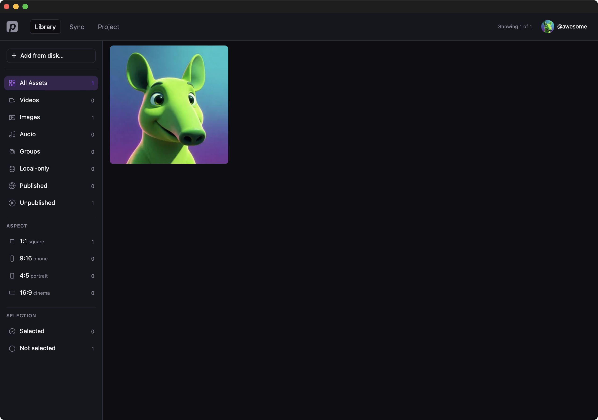
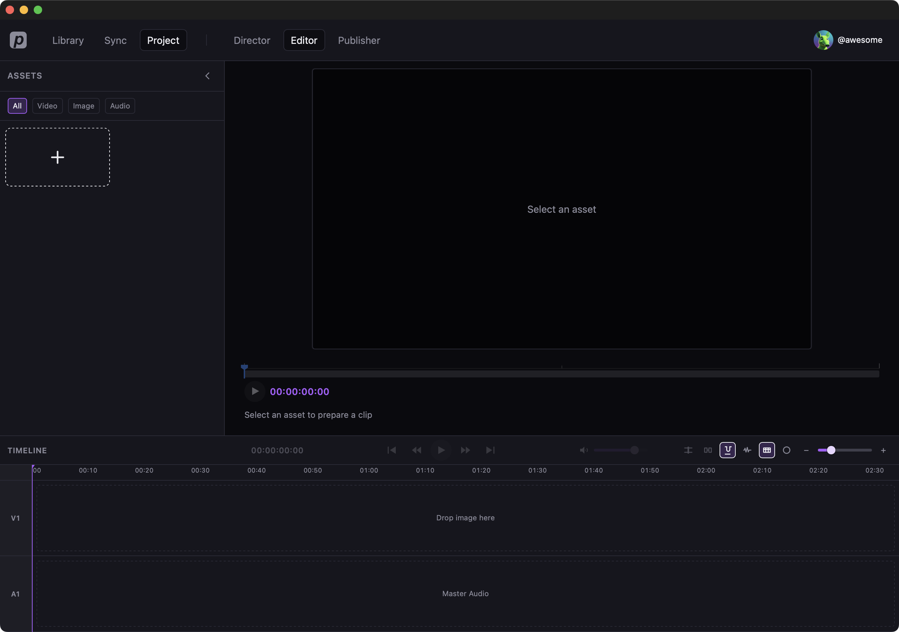
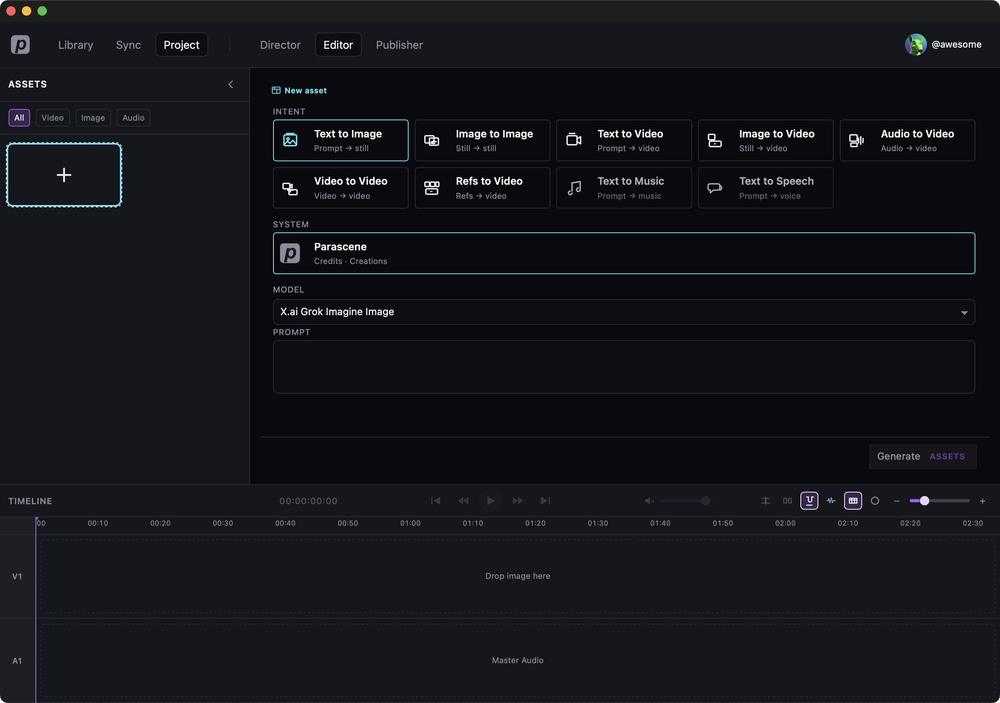

Overview
Parascene Desktop is a local app. The top bar switches the main screens: Library, Sync, and Project. After you open a project, Director, Editor, and Publisher appear next to those tabs.
How-to pages: Getting started, Sync, Projects, Folders, Generate an image.
Projects
This is the starting point when no project is open. Open a recent project or start a new one. Editing modes stay hidden until a project is loaded. Delete removes the local project document; media in the Library is kept.

Library
Every local file lives here. The sidebar filters by type, aspect ratio, and selection. Folders sit on the board with your stills and clips. A project folder is tied to one project; a regular folder is just a group you made.

Library folders vs project folders
Sync
Pull the newest cloud creations onto this computer. Sync newest is the usual step. Counts show what is local. Advanced holds less common repair and folder tools.

Director
Director is the project home. You see the cover, rename the project, set the aspect ratio, and close the project. Looks and scenes are not in this build.

Editor
Editor is where you build a cut. Assets on the left, preview in the middle, timeline at the bottom. Use the + tile (Add asset) to add or generate a still. Publisher is a later step for sharing a hook; it is not covered here.

